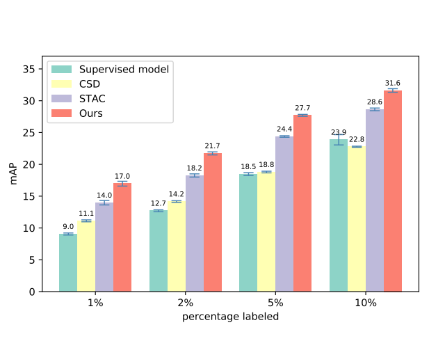
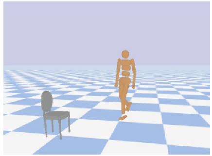
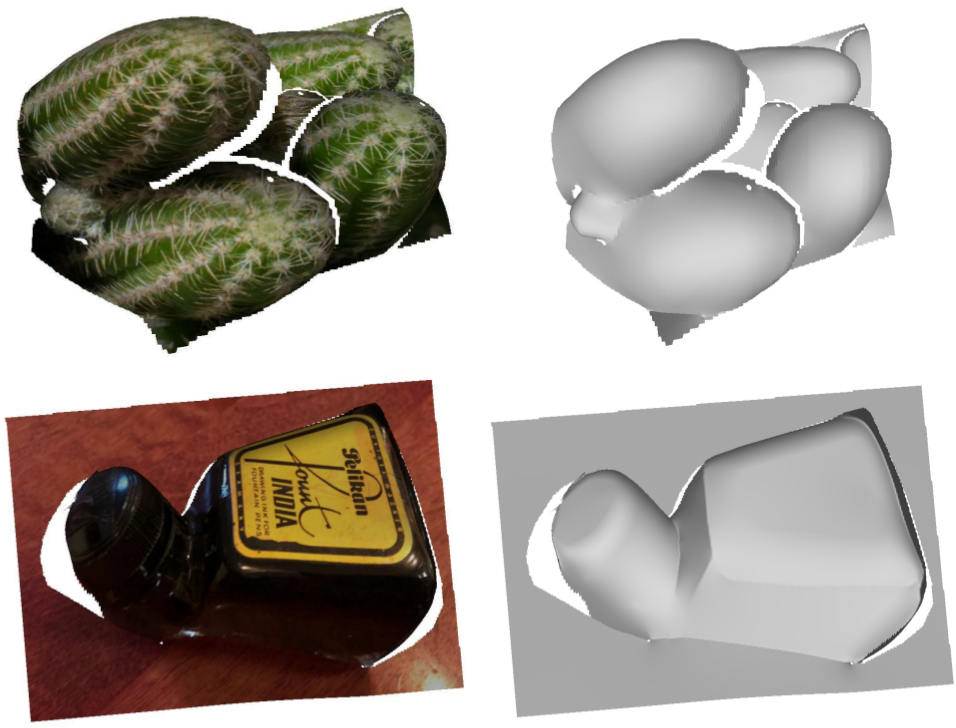
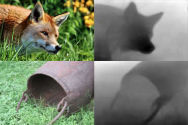
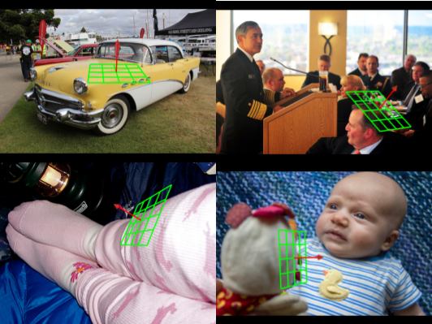
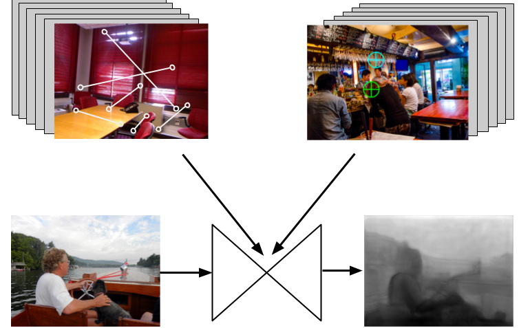
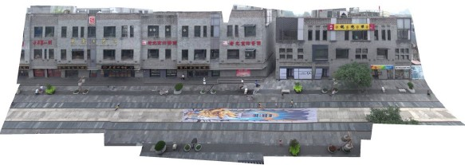
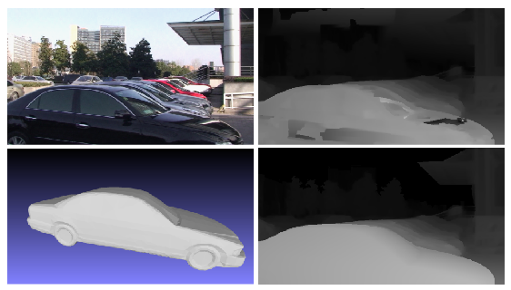

|
I work on GenAI at Meta. I did my Ph.D. at the University of Michigan, Ann Arbor advised by Prof. Jia Deng in the Princeton Vision & Learning Lab. |

|
Shengyi Qian, Weifeng Chen, Min Bai, Xiong Zhou, Zhuowen Tu, Li Erran Li OpenSUN3D Workshop @ Conference on Computer Vision and Pattern Recognition (CVPR), 2024. [paper] We aim to enhance the generalization capability of affordance grounding to in-the-wild objects that are unseen during training, by developing a new approach AffordanceLLM, that takes the advantage of the rich knowledge from large-scale VLMs. |
|  |
Yihe Tang, Weifeng Chen, Yijun Luo, Yuting Zhang Conference on Computer Vision and Pattern Recognition (CVPR), 2021. [paper] We propose a semi-supervised approach for contemporary object detectors following the teacher-student dual model framework. |
|  |
Yu-Wei Chao, Jimei Yang, Weifeng Chen, Jia Deng AAAI Conference on Artificial Intelligence (AAAI), 2021. [paper][video] We propose a hierarchical reinforcement framework to learn high-level interactive tasks. |
|  |
Weifeng Chen, Shengyi Qian, David Fan, Noriyuki Kojima, Max Hamilton, Jia Deng Conference on Computer Vision and Pattern Recognition (CVPR), 2020. [paper][supplementary material][project site] We present Open Annotations of Single Image Surfaces (OASIS), a dataset consisting of detailed 3D geometry for images in the wild. |
|  |
Weifeng Chen, Shengyi Qian, Jia Deng Conference on Computer Vision and Pattern Recognition (CVPR), 2019. [paper][project site][code] We propose a method to automatically generate training data for single-view depth through Structure-from-Motion (SfM) on Internet videos. |
|  |
Weifeng Chen, Donglai Xiang, Jia Deng International Conference on Computer Vision (ICCV), 2017. [paper][dataset][code] Invited [poster] at the Bridges to 3D Workshop, CVPR 2018 We present a new dataset "Surface Normals in the Wild" consisting of images in the wild annotated with surface normals of random points. |
|  |
Weifeng Chen, Zhao Fu, Dawei Yang, Jia Deng Neural Information Processing Systems (NeurIPS), 2016. [paper][dataset][code][supplementary material][BibTex] We introduce a new dataset "Depth in the Wild" consisting of images in the wild annotated with relative depth between pairs of random points. Featured in the Wolfram Neural Net Repository. See this article for more details. |
|  |
Guofeng Zhang, Yi He, Weifeng Chen, Jiaya Jia and Hujun Bao IEEE Transactions on Image Processing (TIP), 2016. [paper] We design a mesh-based framework for creating panoramas from wide-baseline images. |
|  |
Weifeng Chen, Guofeng Zhang, Xiaojun Xiang, Jiaya Jia and Hujun Bao International Conference on 3D Vision (3DV), 2014. [paper] We align CAD models interactively to fix artifacts in MVS output. |
|
Reviewer: CVPR, ICCV, ECCV, NeurIPS, ICML, ICLR, SIGGRAPH Asia, ICRA, AAAI, WACV, ACCV |
Template Credit: Jon Barron